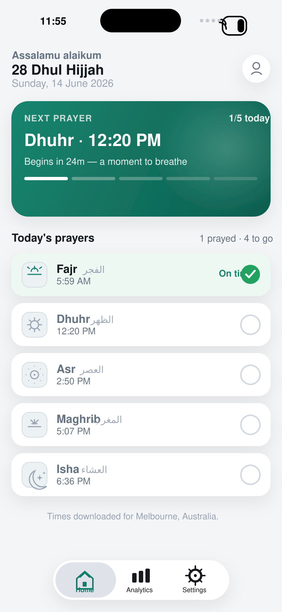
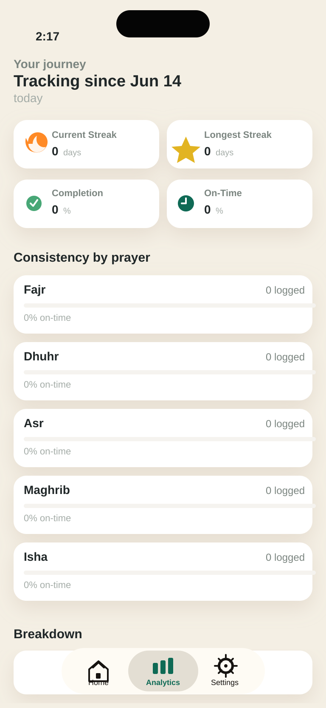
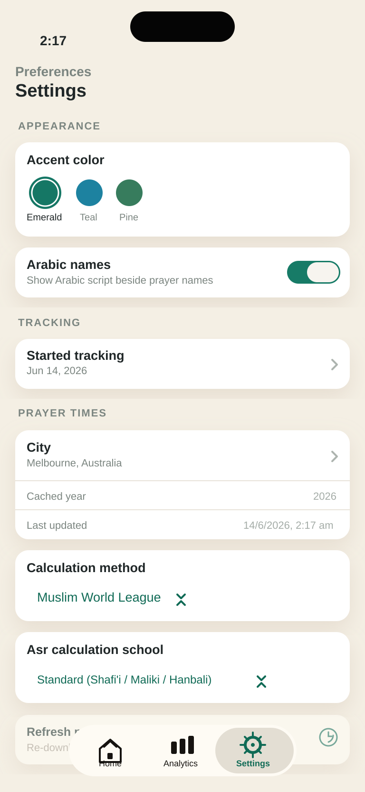

Track the five daily prayers
Log Fajr, Dhuhr, Asr, Maghrib, and Isha with one tap.
Five Prayers is a simple, private iPhone app that helps Muslims track the five daily prayers, log what they prayed, and understand what they missed.
Five Prayers keeps the experience focused: track the five daily prayers, review consistency, and get reminders without noise.
Log Fajr, Dhuhr, Asr, Maghrib, and Isha with one tap.
If you do not log a prayer, the app can count it as missed so you can understand consistency over time.
Review completion trends, consistency by prayer, and steady progress without social pressure.
Choose your city and download prayer times from a provider when you refresh prayer schedules.
Use local iOS notifications for reminders while keeping your data on your device.
No ads, no social profiles, no leaderboards, and no selling user data.
The website keeps a screenshot showcase in place with product views for Home, Analytics, and Settings.



Public-facing metadata for the App Store listing and launch website.
App Name: Five Prayers
Subtitle: Simple Salah tracker
Short Description: Track your five daily prayers, log what you prayed, and see what you missed.
Keywords: salah, prayer, muslim, islam, namaz, prayer tracker, fajr, dhuhr, asr, maghrib, isha, five prayers
Five Prayers is a simple and private prayer tracker for Muslims.
Log Fajr, Dhuhr, Asr, Maghrib, and Isha with one tap. If you do not log a prayer, the app automatically counts it as missed, helping you understand your prayer consistency over time.
Five Prayers is local-first. Prayer logs stay on the device, and the app avoids ads, profiling, and data selling.
Effective date: June 14, 2026
Five Prayers is a simple and private iPhone app for tracking the five daily prayers.
The app does not sell user data. The app does not show ads. The app does not use social profiles or leaderboards.
Prayer logs are stored on the user's device. App settings such as reminders, selected city, calculation method, and display preferences are also stored locally on the device.
This may include prayer status, prayer date, prayer name, reminders, selected city, calculation method, and display preferences.
Users can delete their app data from within the app where available or by deleting the app from their device.
Location or a selected city is used only to calculate prayer times.
The app may contact a prayer time provider to download prayer times for the selected city and year when the user chooses a city or refreshes prayer times.
Notifications are local iOS notifications scheduled on your device. You can change notification permissions and reminder settings in the app or in iOS Settings.
Five Prayers does not knowingly collect personal information from children.
We may update this Privacy Policy from time to time. Any changes will be posted on this page with an updated effective date.
If you have questions about this Privacy Policy, contact us at owaesmirza@gmail.com.
Use the app with the understanding that it is a practical tracking tool, not a religious authority.
Effective date: June 14, 2026
Five Prayers is a personal prayer tracking tool for informational and organisational use.
The app is provided as-is.
The app provides estimated prayer times based on your selected city, settings, and available prayer time data.
Users should verify prayer times with their local mosque, Islamic centre, or trusted authority when accuracy is important.
Five Prayers is not a religious authority. The app does not provide religious rulings, fatwas, or scholarly advice.
The user is responsible for how they use the app and for any reliance they place on the app's prayer times, reminders, and records.
The app may rely on third-party prayer time data providers. We do not guarantee that third-party data will always be available, complete, or error-free.
We aim to keep the app useful and reliable, but we do not guarantee that the app will always be available, error-free, or accurate.
We may update, modify, suspend, or discontinue features at any time without notice.
To the maximum extent permitted by law, Five Prayers and its creators are not liable for any loss, issue, or consequence arising from use of the app.
Your use of the app is also governed by the Privacy Policy.
If you have questions about these Terms, contact us at owaesmirza@gmail.com.
Support, privacy, and accuracy questions answered in plain language.
No. Five Prayers does not use advertising trackers and keeps prayer logs on your device.
It may contact a prayer time provider to download prayer times for the selected city and year.
Prayer times are estimated and can vary by calculation method, settings, and local adjustments. Verify times with your local mosque or trusted authority when accuracy matters.
Need help with Five Prayers? Support, privacy questions, and App Store enquiries can be sent by email.
Email: owaesmirza@gmail.com